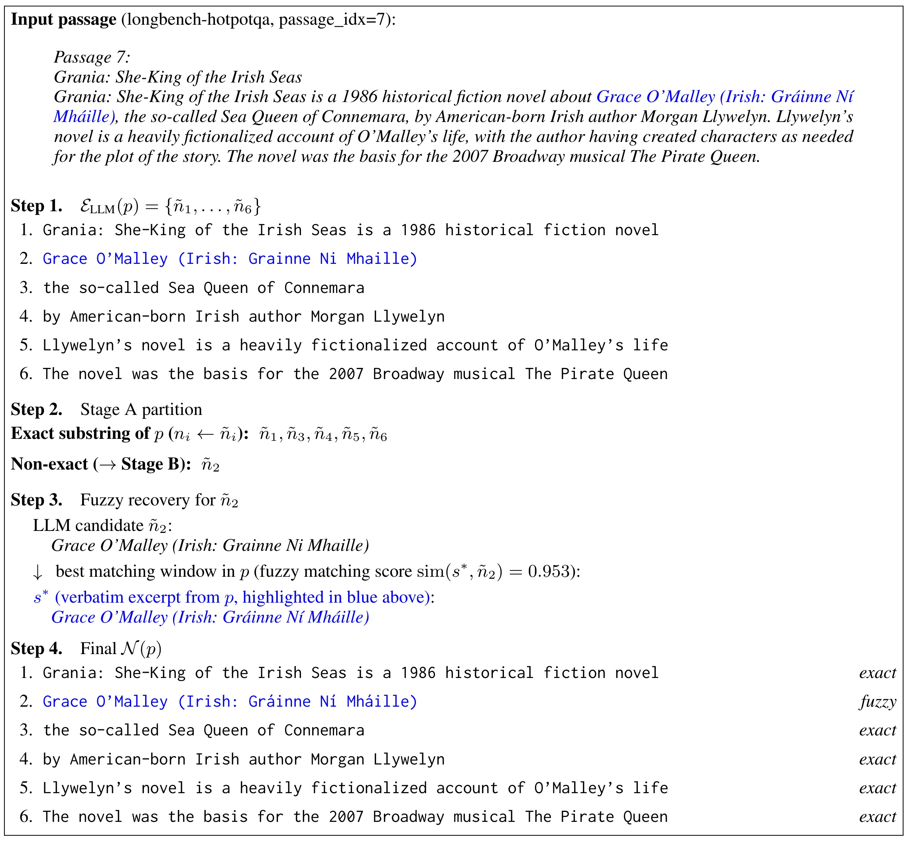
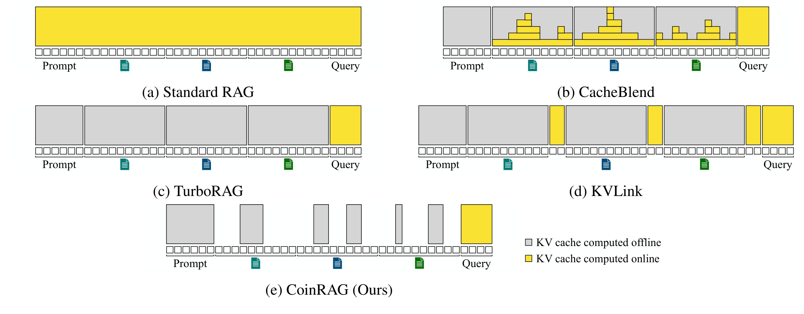
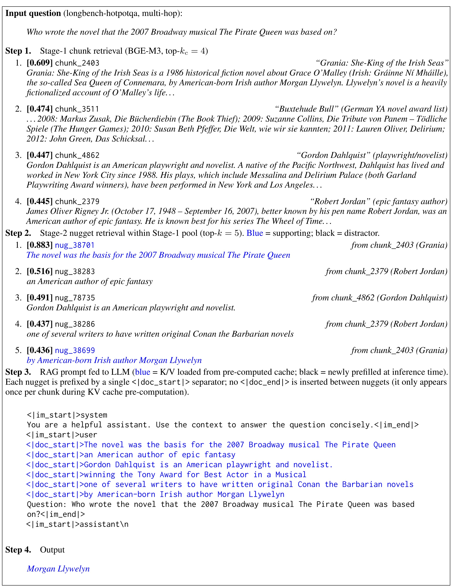
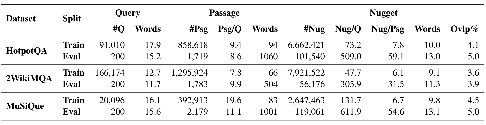
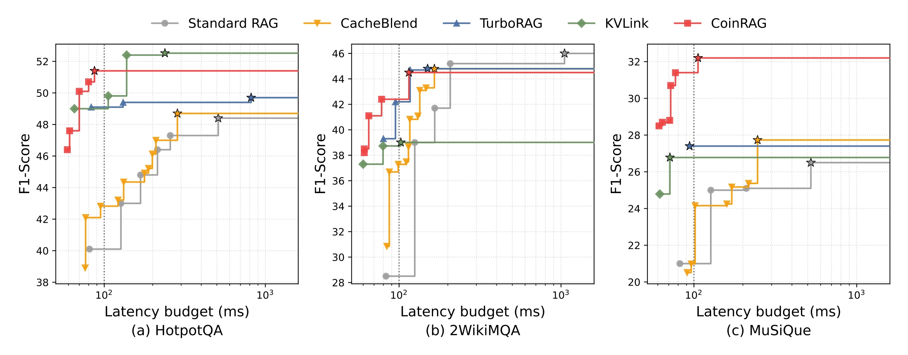
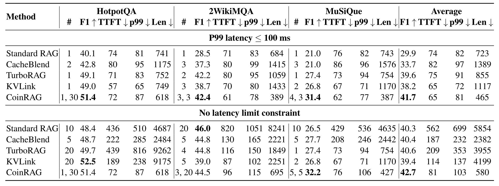
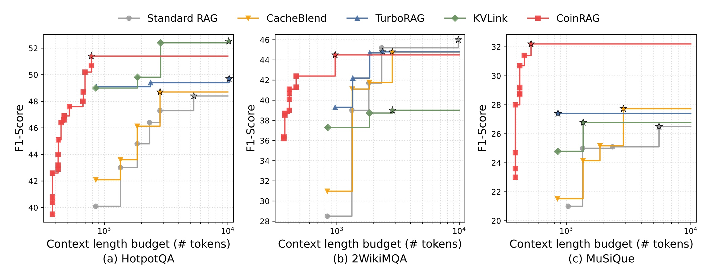
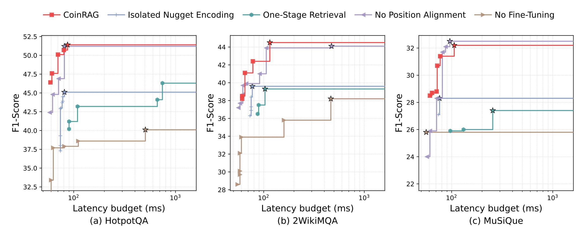
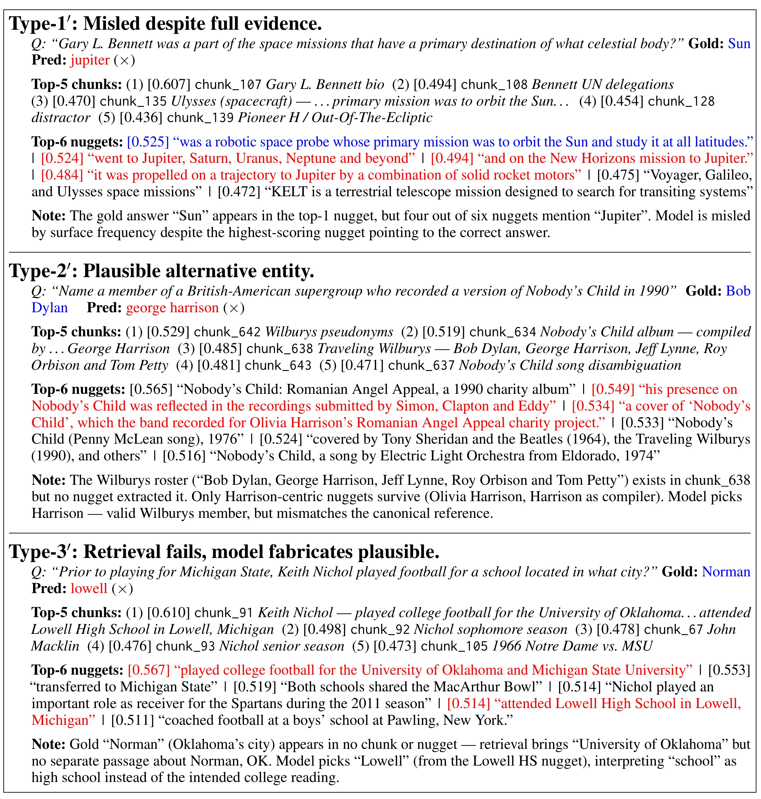

CoinRAG：面向长上下文 RAG 的上下文化信息粒度 KV 缓存复用
CoinRAG 的完整英文题目是 CoinRAG: Contextualized Information Nugget KV Cache Reuse for Long-Context RAG。作者为 Gyuwan Kim、Cheoneum Park 与 Tao Yang；一作主机构是 University of California, Santa Barbara，合作机构包括 Hanbat National University。论文于 2026 年 8 月 7 日提交、8 月 10 日进入 arXiv 新论文列表，论文入口为 arXiv:2608.07458。截至本轮核验，在 arXiv 页面和论文正文给出的公开信息中没有找到独立代码仓库或项目页，因此本文只按论文可复核内容讨论实现。
粗粒度 chunk 级 KV 缓存虽然减少了重复 prefill，却仍把大量冗余和噪声带入在线上下文；在 100ms 级 P99 交互预算下，标准 RAG 往往只能缩小检索范围，准确率与响应速度被迫互换，而真正相关的证据还可能淹没在长而嘈杂的上下文中。
1. 背景和问题
1.1 长上下文 RAG 的成本不是“检索一次”这么简单
标准 RAG 先把文档切成固定长度的 chunk，查询到来后检索若干 chunk，再把系统提示、全部检索文本与问题一同送入大模型。这个流程的在线代价主要发生在 prefill：每条新查询都要重新编码数百到数千个上下文 token，并为其建立活动 KV cache。检索范围越大，找到多跳证据的机会通常越高，但 prefill 延迟、显存占用和注意力噪声也一同增加。论文把服务目标具体化为 P99 Time-to-First-Token 不超过 100ms，而不是只汇报平均延迟。这一点重要，因为面向用户的服务等级通常由尾延迟约束；平均值很好看，并不意味着最慢的 1% 请求仍可交互。
已有的 Cache-Augmented Generation 路线把 chunk 的 KV 预先算好，查询时直接加载。TurboRAG 一类方法因此省掉完整文本的在线前向，但仍以 512-token chunk 为复用单元：某个 chunk 只要被检索到，里面与查询无关的句子也会占据活动前缀。CacheBlend 选择在线重算一小部分 token 来恢复跨 chunk 注意力，KVLink 则加入 link token，让它们在在线阶段吸收前文信息；两者都试图修补独立 chunk 编码丢失的交互，却重新引入计算或额外训练。这里真正的矛盾不是“是否缓存”，而是缓存复用单元太粗：系统为了保留上下文语义，不得不携带大量不相关 token。
另一条信息 nugget 路线把证据压成原子事实。GINGER、Crucible 等方法可以按查询动态生成 nugget，但它们需要在线调用 LLM，且常把 nugget 当作脱离原文环境的独立短文本重新编码。这样虽然短，却丢失了该跨度在完整段落中形成的隐状态。CoinRAG 试图同时保住两边：nugget 必须短到能降低活动上下文，表示又必须来自完整 chunk 的一次编码，不能退化成孤立句子的 KV。
1.2 CoinRAG 重新定义了“缓存中的知识单元”
论文把外部语料记为 chunk 集合，每个 chunk 是固定 token 序列。离线阶段，系统用 LLM 从每个 chunk 中抽取若干连续文本跨度，并记录它们在源 token 序列中的起止位置；与此同时，完整 chunk 只做一次前向计算。在线阶段先检索 chunk，再只在这些 chunk 内检索 nugget，最后从完整 chunk 的 KV 中切出相应区间。于是一个 nugget 不是另算的摘要向量，而是原文连续 token 在完整上文条件下已经形成的 K/V 子张量。
这一定义把“压缩”从文本改写变为表示裁剪。若离线 LLM 抽取到的候选无法准确回指原文，系统不能随意保存其改写版本，否则 KV 切片就没有合法坐标。因此论文设计 exact match、fuzzy match、abandon 三阶段，把候选恢复到原文跨度；无法可靠恢复的候选直接丢弃。在线检索结果也不再只是文档 ID，而是来源 chunk 加起止边界的三元组。后续 RoPE 位置旋转把这些原本位于不同 chunk、不同位置的切片重新排到一个连续前缀中。
CoinRAG 的研究问题因此可以写得很具体：在不修改 Qwen2-7B-Instruct 主体架构的前提下，能否把完整 chunk 的上下文化 KV 拆成查询相关小块，在严格 P99 TTFT 预算下建立比 Standard RAG、CacheBlend、TurboRAG 和 KVLink 更好的准确率—延迟—活动长度 Pareto 前沿？同时，这种非连续切片的组合会制造新的训练—推理结构差，是否需要专门微调？论文的实验和消融正围绕这两个问题展开。
这对推荐与搜索链路也有直接意义：召回阶段常返回长商品描述、评论或用户历史，重排模型真正需要的却是少数属性与行为证据。若能复用“完整上下文中形成、在线只选择局部”的表示，可能同时降低重排输入和事实噪声；但 CoinRAG 本身只验证了 QA，迁移到排序指标仍需单独实验。
论文还把活动 token 数作为 KV 显存代理，与 TTFT、F1 同时画 Pareto 前沿。这个三目标口径避免了只压低平均延迟却让尾延迟或显存恶化，也要求后续判断始终绑定具体 SLA，而不能脱离预算比较单一最高分。
2. 方法
2.1 离线信息 nugget 抽取与上下文化缓存资产
每个原始 passage 先被切为 512-token chunk。GPT-4o-mini 根据提示词提出尽可能短、能独立表达事实的连续文本候选；候选允许是短语或从句，但不得改写。所有可用 nugget 都必须落回源 token 坐标。算法先查精确子串，失败后才在长度相近的整词窗口中寻找相似度最高者：
符号解释：$\tilde n_i$ 是 LLM 生成的第 $i$ 个候选 nugget，$W$ 是在 passage 中枚举的、词数接近该候选的连续窗口集合，$s^*$ 是相似度最大的原文窗口。只有当 $\operatorname{sim}(s^*,\tilde n_i)\geq\tau$ 时才接受，实验取 $\tau=0.7$；否则进入 abandon 阶段。接受后再记录 $s_i,e_i$，使 nugget 能精确映射到源 chunk 的 token 区间。

Figure 7 用《Grania: She-King of the Irish Seas》段落展示了四步过程。LLM 提出的六个候选中，五个可直接在原文中找到；第二个候选把爱尔兰姓名的重音符号写成普通拉丁字母，无法精确匹配。算法没有把改写文本当作资产，而是在原文窗口中找到相似度 0.953 的“Grace O’Malley (Irish: Gráinne Ní Mháille)”，用该原始跨度替换候选。最终六个 nugget 全部带有 exact 或 fuzzy 的可追溯结果。这里的关键不是文字清洗，而是给后续 KV 切片建立合法坐标：如果跨度不能回指，缓存中就不存在与它一一对应的子张量。图中也能看到 nugget 多为从句和短语，而非整句摘要，这正是压缩活动上下文的来源。
离线缓存不是“分别编码每个 nugget”。模型对完整 chunk $b_j$ 运行一次前向，得到 $C_{b_j}$；每个 nugget 只保存其覆盖位置，在线需要时再取 $C_{b_j}[s_i:e_i]$。因此切片里的每个 token 保留了它在原 chunk 中对前文的注意力结果。孤立编码会重新计算同一短语，却看不到源段落其余内容；论文后续用 6.3、4.9、3.9 个 F1 点的峰值差距验证这种上下文化不是形式上的区别。
2.2 Chunk-first、nugget-second 两阶段在线检索
查询 $q$ 到来后，BGE-M3 先在大语料的 chunk 索引上取 top-$k_c$，形成候选子集。系统不在全库全部 nugget 上直接近邻搜索，只在候选 chunk 内排序预抽取 nugget 并保留 top-$k$。粗粒度检索在这里是细粒度检索的语义门，而不是被后者替代。
符号解释：$R(q)$ 是排序后的 nugget 集合；$b_i$ 指明来源 chunk，$s_i,e_i$ 是 token 边界，$k$ 是最终激活数。实验系统扫描多个 $k_c$ 与 $k$，Pareto 曲线因而来自不同检索宽度，而非单个手工配置。
两阶段设计也是一种语义约束。全库短 nugget 容易召回带相似词、却来自无关主题的短语；先确定文档域再找事实跨度可减少表面匹配。直接一阶段检索在三个数据集峰值都更低；两阶段相对提高 9.6%–17.5%，达到峰值所需 nugget 还更少。为继续看清缓存边界，下面先写两类基线。
2.3 RoPE 位置旋转与连续前缀缓存拼接
Standard RAG 把系统 prompt、完整检索文本和查询全部在线编码：
符号解释：$p$ 是系统 prompt，$t_{\mathrm{chunk}}=b_1\oplus\cdots\oplus b_{k_c}$ 是完整 chunk 拼接，$q$ 是查询，$KV_M$ 表示在线前向。它允许全 token 交互，却为每条查询重做最长 prefill。作为对照，chunk-level CAG 加载完整 chunk 缓存，只在线编码查询：
符号解释：$C_{\mathrm{ctx}}^{\mathrm{chunk}}$ 是系统 prompt 与多个完整 chunk KV 经位置调整后的前缀。它省掉 chunk 的在线前向，但每个被召回的 chunk 仍整块占用活动 KV。TurboRAG 是论文用来代表这种设计的强基线。

Figure 1 中灰色代表离线预计算，黄色代表在线计算。Standard RAG 的检索上下文几乎全黄，CacheBlend 灰黄交错，TurboRAG 的 chunk 全灰，KVLink 在 chunk 间加入在线 link token。CoinRAG 只保留不等长灰色片段，把活动长度从“检索到几个 chunk”改成“选中了多少证据 token”。但不同 chunk 的灰块在离线编码时互不可见，并未恢复全局注意力。来自不同源位置的 KV 也不能直接拼接，因为 RoPE 已把原位置写入 key，必须旋转后压成连续序列：
符号解释：$C_p$ 是静态 prompt 缓存，$C_{b_i}[s_i:e_i]$ 是上下文化 nugget，$\operatorname{Rot}(\cdot;\Delta_i)$ 通过 RoPE 搬到新位置，$\oplus$ 是序列拼接。系统保持检索排序和文档内顺序并掩去中间 token；第 $i$ 个切片的新位置由前序长度决定：
符号解释：$|p|$ 是 prompt 长度，$e_j-s_j+1$ 是第 $j$ 个 nugget 长度；累加后片段连续排列，不需重跑完整 attention。位置对齐在 75ms P99 下最有益，100ms 后差距缩小，主要稳定极短前缀。最终查询只在组合前缀条件下在线计算：
符号解释：$KV_M(q;C_{\mathrm{ctx}})$ 是查询 token 在已经装载的证据前缀上产生的新 KV；最终缓存由离线切片与在线查询表示连接。这个表达式把 CoinRAG 的服务边界写清楚：语料表示和系统 prompt 可摊销，查询仍需在线 prefill，但其前置活动上下文已被压缩。

Figure 8 的 HotpotQA 问题询问 The Pirate Queen 所依据小说的作者。第一阶段 $k_c=4$ 时正确 Grania chunk 排第一，也带来三条干扰；第二阶段 $k=5$ 时，最高分 nugget 给出“小说是音乐剧基础”，第五名才给出 Morgan Llywelyn，中间三条只是表面相关线索。两条支持证据虽来自同一个 chunk，却在排名中被干扰项隔开。蓝色证据从离线 KV 加载，查询在线计算，模型把两段证据连成答案。两阶段不会消灭噪声，只是把四个完整 chunk 缩成五个跨度，提高真证据比例。图中最终输出与金答案完全一致。训练时模型原本看到连续文本，而推理时面对旋转、拼接的非连续跨度，因此仍需结构适配。
2.4 Nugget-aware 微调弥合结构失配
论文用带真值和干扰文档的 QA 数据复刻线上流程：按查询取 nugget，构造同样的 $C_{\mathrm{ctx}}$，再对短答案做标准交叉熵：
符号解释：$M$ 是待微调的 Qwen2-7B-Instruct，$y_t$ 是目标答案第 $t$ 个 token，$y_{<t}$ 是此前答案，$C_{\mathrm{ctx}}$ 与 $q$ 按线上切片缓存结构提供条件。优化目标本身并不新，关键在训练输入结构与测试结构一致，使模型学会在旋转、压紧、夹杂干扰 nugget 的前缀上解码。
训练共使用 HotpotQA、2WikiMQA、MuSiQue 的 277,280 个 IRCoT 样本，1 epoch、学习率 $5\times10^{-6}$、有效 batch 16、最大序列长度 1024，训练时 $k_c=5,k=10$，RAFT 噪声概率 0.15。微调只在离线进行，推理路径不增加新模块。其峰值 F1 增益分别为 11.3、6.3、6.4 个点，是四项消融中最稳定的大幅差距之一；这也意味着 CoinRAG 不能被简单视为无需训练的“缓存工程技巧”。论文说它可 training-free 运行，但达到报告的主结果依赖专门适配。
3. 实验结果
3.1 数据集、评测与系统口径
评测选用 LongBench 的三项多文档多跳 QA：HotpotQA、2WikiMQA、MuSiQue，每项 200 个测试问题。选择它们的原因是答案需要跨文档聚合，正好压力测试两阶段检索、细粒度证据保留和 chunk 间缺少直接注意力的影响。准确率采用 token-level F1；生成 prompt 强制输出最短答案，因此 F1 更接近词面答案匹配，不能等同于长答案的事实性或解释质量。效率报告平均 TTFT、P99 TTFT 与活动 prefix token 数；最后一项是在线 KV 显存的代理，而不是直接测得的 GPU 吞吐。
离线用 GPT-4o-mini 抽取 nugget，chunk 固定 512 token；BGE-M3 同时承担 chunk 和 nugget 相似度检索，生成模型是 Qwen2-7B-Instruct。训练在单张 RTX PRO 6000 上进行，推理与延迟测量在 L40S、bfloat16 环境中完成。基线包括 Standard RAG、CacheBlend、TurboRAG 和 KVLink；TurboRAG、KVLink 使用相同训练数据和主要超参数复现。Block-attention 因与 TurboRAG 的 chunk-level 复用设计近似而未单列。

Table 4 中三项评测集的平均 passage 长度为 1060、504、1001 词，平均 nugget 仅 13.0、11.3、13.1 词，相邻重叠率为 3.9%–5.0%，说明抽取结果短且较少重复。但每问候选 nugget 仍有 509.0、305.9、611.9 个，支持先用 chunk 缩池。HotpotQA Eval 的 1,719 个唯一 passage 产生 101,540 个 nugget，MuSiQue 的 2,179 个 passage 产生 119,061 个，候选规模仍足以放大近邻误差。训练列按样本累加、含跨样本重复；评测列是唯一 passage，两种绝对规模不可直接比较。该表证明的是抽取密度与语料规模，不直接证明问答准确率；F1 仍要看后续主表。
3.2 低延迟主结果：优势成立于怎样的预算

Figure 2 横轴是对数 P99 TTFT 预算，纵轴是 F1，虚线为 100ms，星号是无限预算峰值。CoinRAG 在三数据集低延迟区处于上方，MuSiQue 最明显；这表明短前缀允许在同一尾延迟内保留更多证据。HotpotQA 的红线峰值又低于 KVLink 星号，提醒读者区分严格预算与无约束最优。预算放宽后，2WikiMQA 上 Standard RAG/TurboRAG 逐渐追平，HotpotQA 上 KVLink 约 160ms 后反超。阶梯线来自检索数量配置切换，水平段不代表延迟连续可调。三个子图使用同一方法图例但纵轴范围不同，不能按视觉高度跨图比较。该图支持的是受约束 Pareto 优势，并非所有预算绝对领先，也不能单凭平均 TTFT 重现相同顺序。

Table 3 中，P99 不超过 100ms 时，CoinRAG 三数据集 F1 为 51.4、42.4、31.4，平均 41.7；TurboRAG 平均 39.6。5.3% 是相对提升，绝对差 2.1 点。两者平均 TTFT/P99/活动长度分别为 65/81ms/465 token 与 75/91ms/855 token。2WikiMQA 只差 0.2 点，MuSiQue 差 4.0 点，优势并不均匀。
无延迟约束时，CoinRAG/TurboRAG 平均 F1 为 42.7/40.6，活动长度 580/3955，短约 6.8 倍。但 HotpotQA 上 KVLink 52.5 高于 CoinRAG 51.4，2WikiMQA 上 Standard RAG 46.0 高于 44.5。压缩在平均上抵消了交互损失，单任务最优仍取决于证据结构。
3.3 活动上下文长度、显存代理与服务含义

Figure 3 以活动 prefix token 为横轴。CoinRAG 红线明显偏左：同等长度下 F1 更高，或相近 F1 下 KV 更少；单数据集最长可短约 10.1 倍。每请求显存下降应有利于并发，但论文没有线上 QPS、批调度或多租户实验，所以吞吐收益仍是工程推断。
长度优势还要与 I/O 一起理解。在线不再计算完整 chunk，却要从 NVMe 加载目标切片。Qwen2-7B-Instruct 有 28 层、4 个 KV head、head dimension 128，一个 512-token chunk 的 bfloat16 KV 约 28MB。论文按 chunk 建独立文件并以 per-document 线程池异步加载，实际只传被 nugget 覆盖的 token 范围。若存储系统、页缓存或并行 I/O 不足，磁盘加载可能替代 prefill 成为瓶颈；当前结果来自本地 Samsung PM9A3 NVMe，不能直接外推到网络对象存储。
3.4 四项消融：贡献并不等价

Figure 4 中，孤立 nugget 编码使三数据集峰值 F1 降 6.3、4.9、3.9 点，支持“完整 chunk 条件已写入 KV”。两阶段比全库一阶段峰值相对提高 9.6%–17.5%，说明粗筛提供必要语义范围。无位置对齐在 75ms 下损失 3.0%–8.5%，100ms 后差距缩小。无专门微调则少 11.3、6.3、6.4 个 F1 点，结构适配是主结果的关键条件。
这组消融的证据较完整，因为每项都沿延迟预算扫配置，而不是只报单点；不过它没有报告多因素交互。例如“孤立编码+无微调”是否出现非线性退化，或更强检索器能否缩小两阶段优势，仍无法从图中回答。训练数据与评测任务同属三类多跳 QA，也可能让 nugget-aware 微调学习到特定答案风格。严格复现时应先重做 no-fine-tuning 与 isolated 两条曲线，它们最能判断收益来自缓存表示还是监督数据。
3.5 离线成本、I/O 与失败边界
在线节省会转移成离线成本。三项评测缓存构建不足 30 分钟，磁盘占用约 146GB、75GB、173GB；nugget 覆盖约 70% token。训练语料 950,221 个唯一 passage、608 万 nugget，GPT-4o-mini 抽取约 265–325 美元；专门微调约 140 GPU-hours、峰值 75.8GB。模型或 RoPE 改变后资产需重建，高频更新负载未测。

Figure 10 分出三类错误：正确答案 Sun 虽排名第一，却被四条 Jupiter 高频线索压倒；Traveling Wilburys 的完整成员表未被抽成 nugget，模型选择了相关但非标准答案的 Harrison；University of Oklahoma 被检索到，却缺少 Norman 的桥接 passage，模型转而选 Lowell。它们对应生成加权偏置、抽取召回损失和跨文档桥接缺口，短上下文也会放大少数干扰。
缓存与模型权重/位置编码耦合，chunk 间离线编码时互不可见，初始召回失败后生成器无法恢复；实验也未利用连续查询的重叠缓存，未系统评估 prompt injection。CoinRAG 因而更适合语料相对静态、查询量大且尾延迟严格的服务。
4. 总结
4.1 我的判断
CoinRAG 最扎实的贡献，是把“RAG 缓存复用”从 chunk 是否预计算，推进到完整 chunk 条件下的细粒度 KV 是否可切片复用。离线抽取用原文 token span 保证可追溯，两阶段检索控制细粒度噪声，RoPE 旋转把异源切片压成连续前缀，专门微调再适应这种非连续结构。主表、两种 Pareto 曲线和四项消融形成了相对闭合的证据链；尤其是 P99 100ms 而非平均延迟，让系统论文的服务约束更可信。
但它不是无条件替代长上下文 RAG。优势最大的地方是低预算与活动 KV 长度，预算放宽后若跨 chunk 交互重要，KVLink、Standard RAG 或 TurboRAG 能在部分数据集追平甚至超过。工程上更准确的定位是：CoinRAG 用离线存储、抽取和微调成本，换取大量重复查询下更稳定的在线前缀成本。是否值得，需要把语料更新率、NVMe 带宽、模型版本节奏与 P99 目标一起计算。
4.2 工程启发与复现建议
对检索/推荐系统，值得迁移的不是“用 GPT 抽摘要”，而是把候选单元设计成既能回指原始上下文、又能被独立缓存和选择的连续跨度。内容推荐或搜索重排可先召回文档/商品，再在候选内部选择事实、属性或用户兴趣跨度，避免全库细粒度近邻的表面词噪声。在线监控应同时记录 $k_c$、$k$、活动 token、NVMe 读取字节、平均/P99 TTFT 和答案指标，否则很难判断瓶颈从算力转移到 I/O 后是否真正获益。
复现顺序建议先固定 BGE-M3、Qwen2-7B-Instruct、L40S 与 100ms 口径，验证 Table 3；再分别关闭微调、上下文化切片，确认两条最大消融；最后替换检索器和存储层，测试结果是否仍成立。还应核对 “5.3% 相对 F1” 与 “11.3 个 F1 点”两种口径，避免在汇报中混用。
4.3 局限与后续跟进
主要局限至少有四项：
- 任务与模型覆盖窄。 只有三项多跳 QA 和一个 7B 生成模型，无法说明对长答案、对话、多语种、70B 模型或推荐排序任务同样有效。
- 离线资产昂贵且耦合。 数百 GB 缓存、LLM 抽取费用和 140 GPU-hours 微调会随语料/模型版本更新重复发生。
- 跨 chunk 交互缺失。 切片保留 chunk 内上下文，但不同来源 chunk 编码时互不可见，复杂桥接可能受损。
- 召回与安全边界未解决。 nugget 抽取遗漏、表面词干扰、动态知识更新和 prompt injection 都可能被固化进缓存。
- 服务证据仍不完整。 活动 token 是显存代理，论文没有真实多并发 QPS、缓存命中率、网络存储或线上流量实验。
后续优先跟进三条：第一，在 QuAC、CoQA、Doc2Dial 上测跨查询缓存复用；第二，接入 cross-encoder reranker，观察 Figure 10 三类错误是否下降；第三，按同一准确率做端到端成本曲线，统一计入抽取、缓存、I/O、prefill 与并发。若代码开放，还应检查 RoPE rotation、重叠 nugget 去重和增量更新。